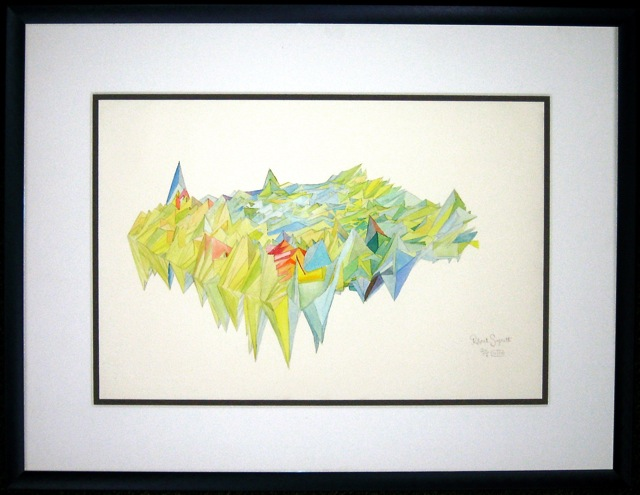
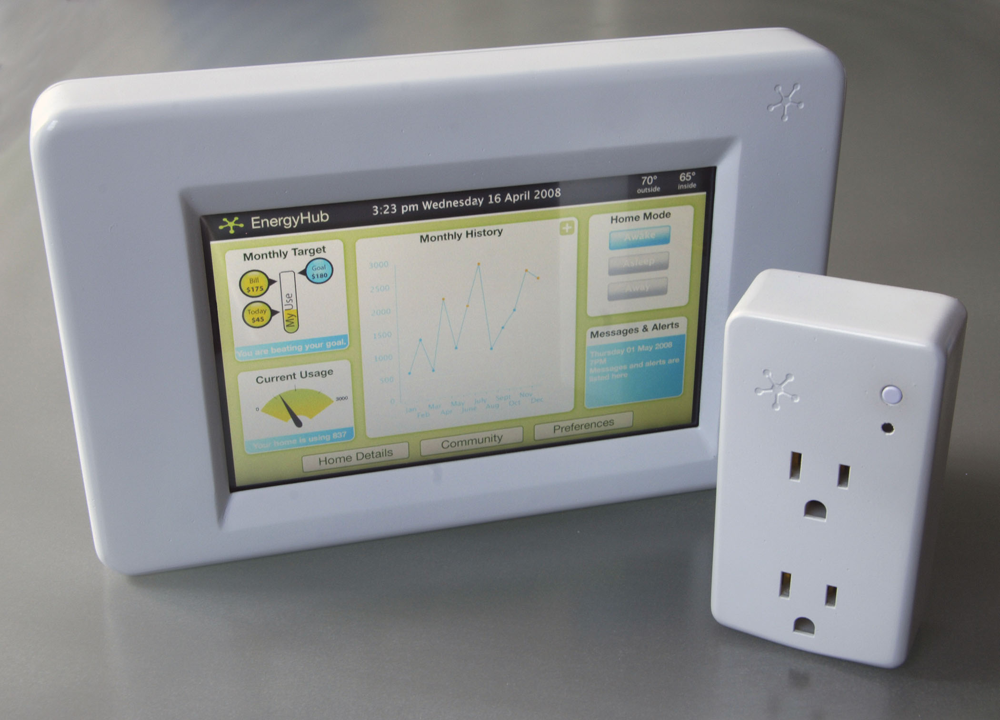

people doing strange things with electricity
The 98.2.8th dorkbot-nyc meeting took place at 7pm on Wednesday, March 4th, 2009 at Location One in SoHo.
The meeting was free and open to the public. People brought snacks to share. YUMM.
It featured the ovate and finely serrated:
Douglas's images from the meeting
Kate Hartman & Rob Faludi: Wireless Wearables and the Lilypad XBee
From instrumental bird masks to networked pajamas, these sewable radios open up a world of new possibilities. The LilyPad XBee is a radio transceiver that you can sew into your clothes. We will start with an overview of communication and construction techniques for creating wireless wearables and end with current examples of clothing that talks!
http://lilypadxbee.katehartman.com
Brian Whitman: The Echo Nest Remix API
Make things with music.
http://code.google.com/p/echo-nest-remix
http://developer.echonest.com
Stephan von Muehlen: Energy Hub
EnergyHub is a Brooklyn-based startup that provides tools for consumers to lower their energy costs and save money. Recognizing the urgent need for more responsible consumption, we help make homes and communities energy aware and energy efficient with hardware and software that connect to the 'Smart Grid'.
http://www.energyhub.net
Next meeting: 01 april 2009